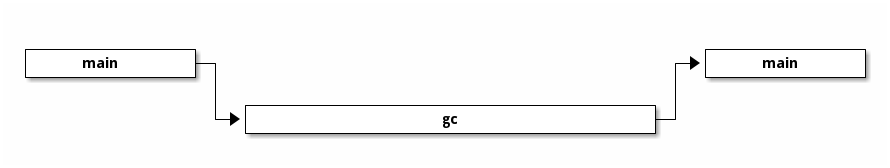

gc
本章来讲解 Lua 内部实现的 gc 机制。
1 algo
gc 算法有很多种，Lua 采用一种增量式三色标记清除算法来实现 gc 机制。
之所以说一种，是因为采用的 gc 算法与其说是一个算法，不如说是一类算法， 大体的思想是相同的，不过在实现细节有些许不同。
1.1 mark & sweep
深入之前，先来了解一下经典的双色标记清除算法。
初始阶段，新建的所有的对象，标记为白色，

标记阶段，将所有从 root 可达的对象标记为黑色；

回收阶段，将所有白色对象回收，同时将所有黑色对象重新标记回白色；

gc 的过程，所有对象在两种颜色间完成标记和清理。


非增量
collect 过程必须执行结束，才能执行程序
1.2 tri color inc mark and sweep

barrier
1.3 4 color
double white
Tables use backward barriers, all other traversable objects use forward barriers.
A write barrier in a garbage collector is a fragment of code emitted by the compiler immediately before every store operation to ensure that (e.g.) generational invariants are maintained.”
2 reality
2.1 state

2.2 gclist
g->grey ->gclist
g->grayagain
g->rootgc
2.3 bit
Simple description The Lua garbage collector is a mark & sweep collector. The collector has two major phases mark & sweep that it runs each collection cycle. During the mark phases the collector traverse the Lua stack and into tables to mark values it finds as live. Next the sweep phases will walk a list of all collectible values and free all dead values it finds.
Detailed description All collectible type objects have a 'marked' bit field. The bits are defined as (copied from header "lgc.h"):
bit 0 - object is white (type 0) bit 1 - object is white (type 1) bit 2 - object is black bit 3 - for userdata: has been finalized bit 3 - for tables: has weak keys (note this bit has two different meanings one for userdata and one for tables) bit 4 - for tables: has weak values bit 5 - object is fixed (should not be collected) bit 6 - object is "super" fixed (only the main thread)
The garbage collector keeps track of a current white (type 0 or 1) and objects with the other white are dead objects that can be collected during the sweep states.
An object's color is defined by which of the first 3 bits (0, 1, 2) are set:
It is white if one of the two white bits (0,1) are set and the black bit is clear. Only one white bit should be used by a white object. It is gray if all three color bits (0,1,2) are clear. It is black if the black bit is set and the two white bits are clear.
Garbage collector states (each collection cycle passes through these states in this order):
GCSpause - Start of collection cycle. At this state all objects should be marked with the current white. The main luaState, globals table, registry, and metatables are marked gray and added to the gray list. The state now changes to GCSpropagate. GCSpropagate - Each object in the gray list is removed and marked black, then any white (type 0 or 1) objects it references are marked gray and added to the gray list. Once the gray list is empty the current white is switched to the other white. All objects marked with the old white type are now dead objects. The state now changes to GCSsweepstring. GCSsweepstring - The color of each string in the internal strings hashtable is checked. If the color matches the old white type that string is dead and is freed. If the color matches the current white (newly created string) or is gray (some other object references it), then it is alive and its color is reset to the current white. Once all strings are checked the state is changed to GCSsweep. GCSsweep - The color of each objects in the global rootgc list (this list holds all objects except strings) is checked just like the strings during the GCSsweepstring state. Dead objects are freed and removed from the rootgc list. Live objects have their color reset to the current white. Once all objects have been checked the state is changed to GCSfinalize. GCSfinalize - This state will finalize all dead userdata objects by running their "_gc" metamethod. Once all dead userdata objects have been finailzed the state is changed to GCSpause and this completes a cycle of the garbage collector.
http://wiki.luajit.org/New-Garbage-Collector
https://www.zhihu.com/question/62000722
3 weaktable
Tables use backward barriers, all other traversable objects use forward barriers.